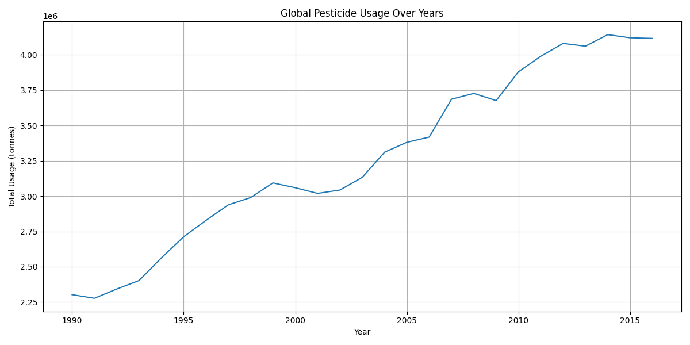
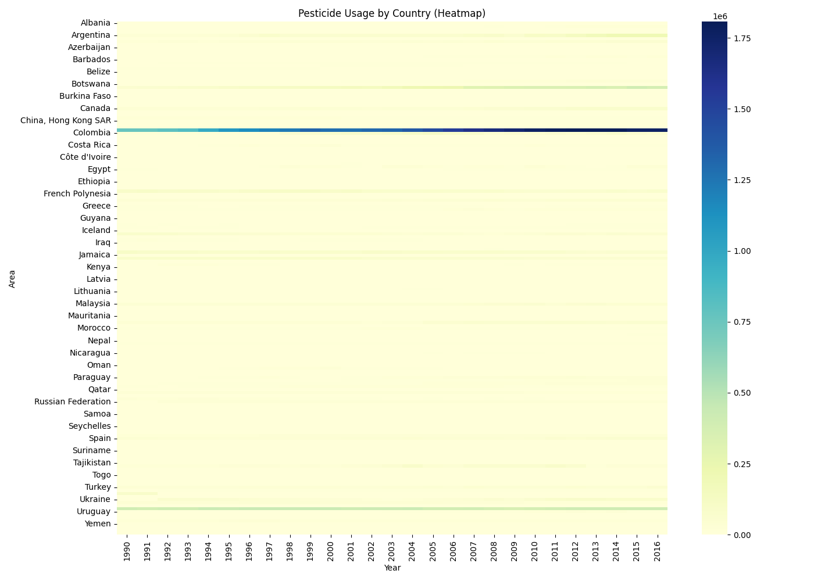

🌿 Pesticide Analytics
Home
Dataset
Results
Help
🌓 Mode
Analytics & Graphs
Interactive and static visualizations representing pesticide usage over time and across regions.
📈 Global Usage Over Years

🔥 Country-wise Heatmap

🌍 Pesticide Usage Map